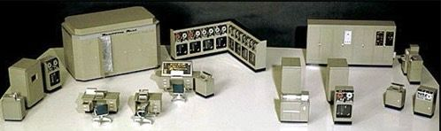

1960s
- The U.S. Department of Defense created ARPANET (Advanced Research Projects Agency Network) to allow military and research institutions to communicate.
- The first operational node on ARPANET was placed in 1969.
1970s
- The Transmission Control Protocol (TCP) was developed to transfer packets through a network
- The ALOHAnet satellite network was established in Hawaii
1980s
- The term "Internet" became widely used in 1982
- In 1983, ARPANET and the Defense Data Network officially changed to the Transfer Control Protocol/Internetwork Protocol (TCP/IP) standard
1990s
- The World Wide Web was created in 1991 by Tim Berners-Lee
- The first graphical Web browser was developed, making the Web very popular
- The Internet became visible to the general public
2000s
- Social networking websites like MySpace, Facebook, and Twitter emerged
- Cloud computing emerged
A Brrief History Of The Internet
Sharing Resources
The Internet started in the 1960s as a way for government researchers to share information. Computers in the '60s were large and immobile and in order to make use of information stored in any one computer, one had to either travel to the site of the computer or have magnetic computer tapes sent through the conventional postal system. Another catalyst in the formation of the Internet was the heating up of the Cold War. The Soviet Union's launch of the Sputnik satellite spurred the U.S. Defense Department to consider ways information could still be disseminated even after a nuclear attack. This eventually led to the formation of the ARPANET (Advanced Research Projects Agency Network), the network that ultimately evolved into what we now know as the Internet. ARPANET was a great success but membership was limited to certain academic and research organizations who had contracts with the Defense Department. In response to this, other networks were created to provide information sharing. January 1, 1983 is considered the official birthday of the Internet. Prior to this, the various computer networks did not have a standard way to communicate with each other. A new communications protocol was established called Transfer Control Protocol/Internetwork Protocol (TCP/IP). This allowed different kinds of computers on different networks to "talk" to each other. ARPANET and the Defense Data Network officially changed to the TCP/IP standard on January 1, 1983, hence the birth of the Internet. All networks could now be connected by a universal language.
The image above is a scale model of the UNIVAC I (the name stood for Universal Automatic Computer) which was delivered to the Census Bureau in 1951. It weighed some 16,000 pounds, used 5,000 vacuum tubes, and could perform about 1,000 calculations per second. It was the first American commercial computer, as well as the first computer designed for business use. (Business computers like the UNIVAC processed data more slowly than the IAS-type machines, but were designed for fast input and output.) The first few sales were to government agencies, the A.C. Nielsen Company, and the Prudential Insurance Company. The first UNIVAC for business applications was installed at the General Electric Appliance Division, to do payroll, in 1954. By 1957 Remington-Rand (which had purchased the Eckert-Mauchly Computer Corporation in 1950) had sold forty-six machines.
Types of internet Protocols
There's more to the internet than the world wide web.
When we think of the Internet we often think only of the World Wide Web. The Web is one of several ways to retrieve information from the Internet. These different types of Internet connections are known as protocols. You could use separate software applications to access the Internet with each of these protocols, though you probably wouldn't need to. Many Internet Web browsers allow users to access files using most of the protocols. Following are three categories of Internet services and examples of types of services in each category.
File retrieval protocols
This type of service was one of the earliest ways of retrieving information from computers connected to the Internet. You could view the names of the files stored on the serving computer, but you didn't have any type of graphics and sometimes no description of a file's content. You would need to have advanced knowledge of which files contained the information you sought.
FTP (File Transfer Protocol)
This was one of the first Internet services developed and it allows users to move files from one computer to another. Using the FTP program, a user can logon to a remote computer, browse through its files, and either download or upload files (if the remote computer allows). These can be any type of file, but the user is only allowed to see the file name; no description of the file content is included. You might encounter the FTP protocol if you try to download any software applications from the World Wide Web. Many sites that offer downloadable applications use the FTP protocol.
An example of a FTP Protocol Window:
Gopher
This is a menu-driven file retrieval protocol. It allows users to browse through a menu of files and directories on a remote computer. The Gopher protocol was developed at the University of Minnesota and is still used by some universities and research institutions. It is not as popular as it once was, but it is still available for use.
Gopher
Gopher offers downloadable files with some content description to make it easier to find the file you need. The files are arranged on the remote computer in a hierarchical manner, much like the files on your computer's hard drive are arranged. This protocol isn't widely used anymore, but you can still find some operational gopher sites.
An example of a Gopher Window:
Telnet
This is a protocol that allows you to logon to a remote computer and use its resources as if you were sitting at the computer. You can run programs, access files, and even send email from the remote computer. Telnet is not as popular as it once was, but it is still available for use.
Telnet allows you to logon to a remote computer and use its resources as if you were sitting at the computer. You can run programs, access files, and even send email from the remote computer. Telnet is not as popular as it once was, but it is still available for use.
World Wide Web
The World Wide Web (WWW) is a system of interlinked hypertext documents accessed via the Internet. It allows users to view and interact with multimedia content such as text, images, audio, and video. The WWW uses the Hypertext Transfer Protocol (HTTP) to transfer data between web servers and web browsers.
An example of a Web Browser Window:
Web Browser
You can connect to and use a remote computer program by using the telnet protocol. Generally you would telnet into a specific application housed on a serving computer that would allow you to use that application as if it were on your own computer. Again, using this protocol requires special software.

The following are external links and will open in pop-up windows:
FTP
Example of FTP Protocol:
Tucows, Software music, themes and games download sites.
Gopher
Example of Gopher protocol: University of Minnesota
Healthier U of M, a program to help students and staff live healthier lives.
Telnet
Example of Telnet Protocol:
University of Wisconsin-Milwaukee Libraries, Internet Resources.
World Wide Web
Example of World Wide Web:
The World Wide Web Consortium (W3C) is an international community that develops open standards to ensure the long-term growth of the Web.
Communications Protocols
emails, news groups and chat
These are the messaging protocols that allow users to communicate both asynchronously (sender and receiver aren't required to both be connected to the Internet at the same time; e.g. email) and synchronously (as with chatting in "real time").
This method of Internet communication has become the standard. A main computer acts as a "post office" by sending and receiving mail for those who have accounts. This mail can be retrieved through any number of email software applications (MS Outlook, Eudora, etc.) or from Web based email accounts (Yahoo, Hotmail). Email is an example of asynchronous Internet communication. Email also provides the ability to access email lists. You can subscribe to an email list covering any number of topics or interests and will receive messages posted by other subscribers. Email communities evolve from interaction between subscribers who have similar interests or obsessions.
Usenet
Usenet is something like a bulletin board or an email list without the subscription. Anyone can post a message to or browse through a Usenet newsgroup. Usenet messages are retained on the serving computer only for a predetermined length of time and then are automatically deleted, whereas email list messages are retained on the serving computer until the account holder downloads them. Many email applications, as well as Web browsers, allow you to set up Usenet newsgroup accounts.
IRC (Internet Relay Chat)
It allows users to chat in "real time" with other users who are logged on to the same server. You can set up a chat room and invite others to join you, or you can join an existing chat room. IRC is not as popular as it once was, but it is still available for use.
This protocol allows for synchronous communication: users on different computers anywhere in the world can communicate in "real time" or simultaneously. You can instantly see a response to a typed message by several people at the same time. This protocol requires a special software application that can be downloaded from the Web, generally for free.
The following are external links and will open in pop-up windows:
Chat
Internet Relay Chat(IRC) Help pageAOL Chat
Meebo
Multimedia Information Protocol
Hypertext transfer protocol - a.k.a The Web
The World Wide Web is the new kid on the block having only been developed in the late 1980s by the European Lab for Particle Physics in Switzerland. This Internet protocol was quickly embraced by the public and has become the most popular way to provide and obtain information from the Internet. The Web offers not only access to files to download, but offers a way to jump from site to site through a series of connecting hyperlinks.
The most distinguishing feature of the Web is the way that text is formatted. A series of "tags" is used to encode and format text, graphics, animation, sound, and other types of files. These tags are called HTML (HyperText Markup Language). These HTML files appear on your computer screen as determined by the tags used in its coding. You can see the "source" HTML coding for any Web page by choosing to "View Source" from your browser's menu bar.
The Web is a multimedia information protocol. It allows you to view text, graphics, animation, sound, and video all in one place. The Web is the most popular way to provide and obtain information from the Internet. The Web offers not only access to files to download, but offers a way to jump from site to site through a series of connecting hyperlinks.
Browsers and Navigation.
Your transports around the World Wide Web
A browser is an application you use to view files on the World Wide Web. There are text or terminal-based browsers (such as Lynx) that allow you to view only the text of a file on the Web. Most browsers now are graphical browsers that can be used to view text, graphics, and other multimedia information.
There are many types of Web browsers available, but the most widely used are MS Internet Explorer and Netscape. Both claim to be better and faster than the other, but the choice of which one to use usually becomes a personal one. Because some Web pages are created for specific browsers, it can be important which browser you use. Web pages may look different when accessed by different browsers.
Browsers are the software applications that allow you to view files on the World Wide Web. There are many different browsers available, but the most popular ones are Microsoft Internet Explorer and Mozilla Firefox. Each browser has its own features and capabilities, so you may want to try a few different ones to see which one you prefer.
Browsers
Microsoft Internet Explorer
Internet Explorer holds the lion's share of the browser usage today, but it came into the game later than its main competitor.
Microsoft has met with a good deal of criticism in recent years concerning Internet Explorer because of its alleged intent to make IE an integral and necessary element of the Windows operating system. Competitors complained that Microsoft tries to lock them out of the market by making IE the only Web browser effectively usable by the Windows system.
Netscape
Netscape was one of the first commercial browsers on the scene and dominated the browser market until Microsoft got serious about Internet Explorer. There are some Internet users who are fiercely loyal to Netscape and there are sites on the Web that are best viewed using Netscape.
In either of these browsers, if you want to save a Web site that you find useful and want to return to, try using the Favorites (MS Internet Explorer) or Bookmarks (Netscape) function found on the menu bars at the top of the browser screen.
Other Browsers
There are many other browsers available, including Opera, Safari, and Mozilla Firefox. Each browser has its own features and capabilities, so you may want to try a few different ones to see which one you prefer.
Search the Web using Google. Enter your search term in the box above and click the Search button.
Note: This will open a new tab or window with the Google search results.
Conclusion
The Internet has come a long way since its inception in the 1960s. It has evolved from a simple way for government researchers to share information to a complex network that connects billions of people around the world. The Internet has changed the way we communicate, access information, and do business. It is an essential part of our daily lives and will continue to shape our future.